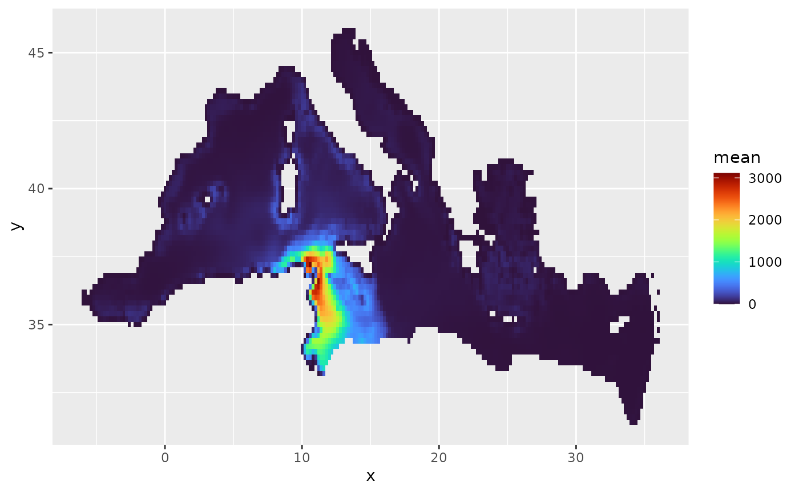
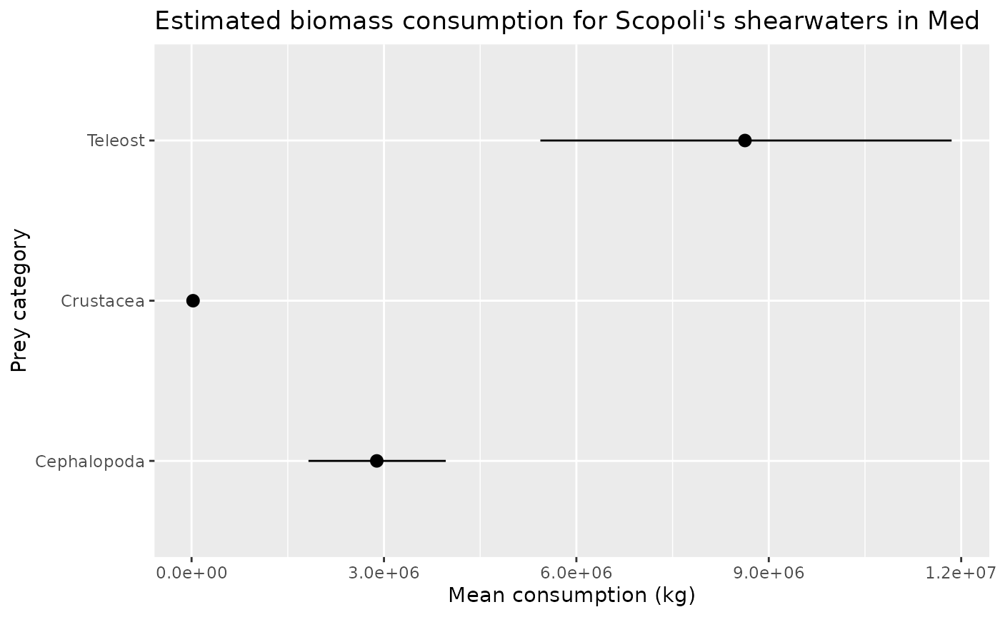
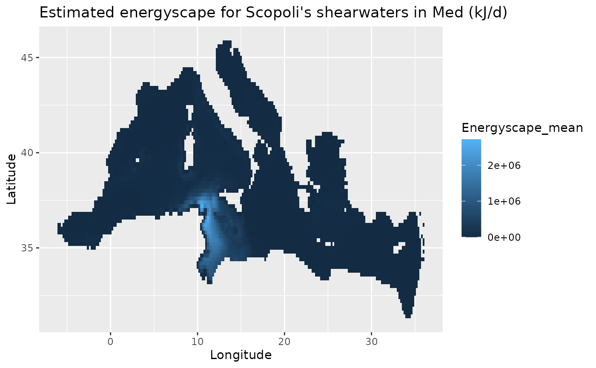
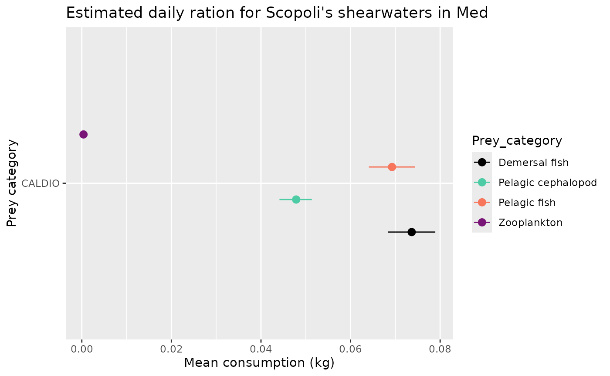

energyscapes: Estimating top predator energyscapes and biomass consumption
The goal of energyscapes is to estimate the field metabolic rate of marine top predator species. Combining FMR with body mass distribution data, abundance and SST through allometric relationships, the package permits estimating the total energyscape for a species, that is the spatialised energetic needs of the total population. Furthermore, this energyscape can be used in combination with diet composition and prey energy content information to estimate the total biomass of prey necessary for a top predator population to sustain its needs.
The package uses Monte Carlo simulations to build posterior distributions of parameters and propagate uncertainty from the various sources throughout the analyses into the final estimations.
Set up data
The package contains some example data, they can be loaded with:
library(energyscapes)
library(ggplot2)
library(viridis)
#> Loading required package: viridisLite
data(list = c("diet", "species_abundance", "sst", "weight", "map_coords", "beta"))These data represents the various elements needed for the analyses for the particular case of the Scopoli’s shearwaters in the Mediterranean Sea: the distribution of body mass in the population, the map of abundance (from Lambert et al 2024 ICES JMS; 10.1093/icesjms/fsae058), the map of SST (only useful for fish species; retrieved from the E.U. Copernicus Marine Service, product ”MEDSEA MULTIYEAR PHY 006 004”, https://doi.org/10.25423/CMCC/MEDSEA MULTIYEAR PHY 006 004 E3R1), the diet composition (from Granadeiro et al 1998 MEPS, 10.3354/meps166267), the coordinates of the map and the distribution of beta parameter used in the allometric equation.
ggplot(species_abundance) +
geom_tile(aes(x = x, y = y, fill = mean)) +
scale_fill_viridis(option = "H")
ggplot(sst) +
geom_tile(aes(x = x, y = y, fill = mean)) +
scale_fill_viridis(option = "H")
str(diet) # see ?diet for the detail about table structure
#> tibble [7 × 11] (S3: tbl_df/tbl/data.frame)
#> $ Predator_key : chr [1:7] "CALDIO" "CALDIO" "CALDIO" "CALDIO" ...
#> $ Latin_name : chr [1:7] "Scomberesocidae" "Macrorhamphosus sp" "Capros aper" "Trachurus sp" ...
#> $ pW : num [1:7] 24.9 17.2 21.2 7.7 3.8 0.2 25.1
#> $ Source_diet : chr [1:7] "Granadeiro et al 1998 MEPS" "Granadeiro et al 1998 MEPS" "Granadeiro et al 1998 MEPS" "Granadeiro et al 1998 MEPS" ...
#> $ Common_name : chr [1:7] "Atlantic saury" "Snipefish" "Boarfish" "Horse mackerel" ...
#> $ Energy_content : num [1:7] 5.8 5.7 6.2 6 7.9 4.3 4.4
#> $ Estimate_level : chr [1:7] "species" "group" "species" "species" ...
#> $ Family : chr [1:7] "Scomberesocidae" "Centriscidae" "Caproidae" "Carangidae" ...
#> $ Taxonomic_group : chr [1:7] "Teleost" "Teleost" "Teleost" "Teleost" ...
#> $ Functional_group : chr [1:7] "Pelagic fish" "Demersal fish" "Demersal fish" "Pelagic fish" ...
#> $ Source_energy_content: chr [1:7] "Spitz et al 2010 ICES JMS" "Spitz et al 2010 ICES JMS" "Spitz et al 2010 ICES JMS" "Spitz et al 2010 ICES JMS" ...Run the analysis
From these data, we use the main function of the package
(mc_simulation()) to run the Monte Carlo simulations and
estimate the energyscape and biomass consumptions:
# test mc_simulation() with 2 prey levels
CALDIO_result <- mc_simulation(predator_name = "CALDIO",
predator_group = "Procellariform",
map_coordinates = map_coords,
prey_taxonomic_level = "Taxonomic_group",
diet = diet,
assimilation_rate = 0.8,
n_days = 30+31+31,
predator_weight = weight,
abundance_map = species_abundance,
temperature_map = sst)
#> Computing Teleost for CALDIO
#> Computing Crustacea for CALDIO
#> Computing Cephalopoda for CALDIO
#> Wrapping up
str(CALDIO_result, max.level = 1)
#> List of 8
#> $ FMR_map :'data.frame': 5720 obs. of 8 variables:
#> $ Energyscape :'data.frame': 5720 obs. of 12 variables:
#> $ DailyRation :'data.frame': 3 obs. of 6 variables:
#> $ DailyRationPropBM :'data.frame': 3 obs. of 6 variables:
#> $ Conso :'data.frame': 3 obs. of 6 variables:
#> $ DailyRation_map :'data.frame': 17160 obs. of 8 variables:
#> $ DailyRationPropBM_map:'data.frame': 17160 obs. of 8 variables:
#> $ Conso_map :'data.frame': 17160 obs. of 8 variables:This function returns a bunch of objects:
- Maps of FMR and energyscape, but also the spatialised daily ration (expressed as is or as proportion of body mass) and the spatialised biomass consumption.
- Tables summarising the daily ration (for one individual, again raw or as proportion of body mass) and the total consumption, per prey category.
All estimated values comes with mean, standard deviation, lower 10% and upper 90% of the posterior distribution from the Monte Carlo simulation.
An example of estimated consumption: 
The code is automated so that the diet items can be sorted by taxonomy (prey_taxonomic_level = “Taxonomic_group”), by functional groups (prey_taxonomic_level = “Functional_group”), by family (prey_taxonomic_level = “Family”) or by any relevant grouping variable (prey_taxonomic_level must be a column in the diet dataframe).
I also created a custom color palette to be used for plotting results
from the above functions. The palette matches the EcoScope project
graphic templates and is ggplot2 friendly
(scale_fill_ecoscope and
scale_color_ecoscope).
#> Computing Pelagic fish for CALDIO
#> Computing Demersal fish for CALDIO
#> Computing Zooplankton for CALDIO
#> Computing Pelagic cephalopod for CALDIO
#> Wrapping up